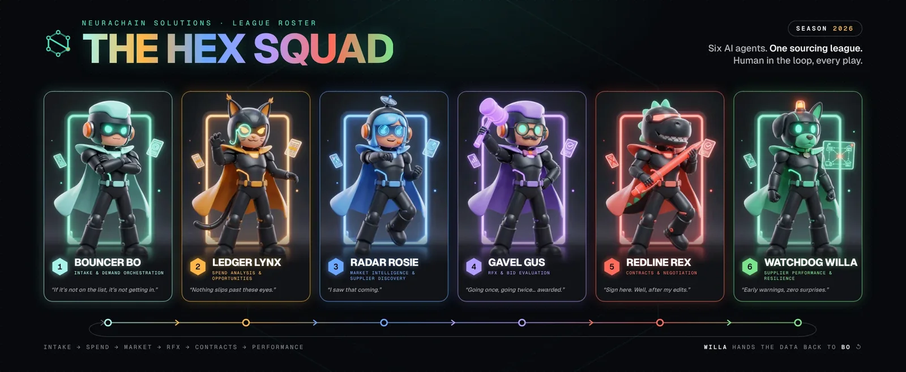
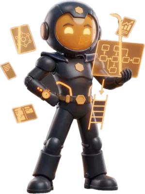
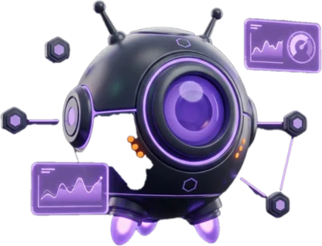
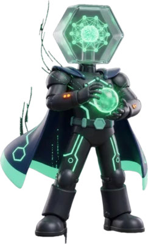

Five service modules. One company from first savings to AI.
Each module is a defined package with set deliverables, delivered the same way through the NeuraChain Method. Most operations start with Strategic Sourcing and LEAN Optimization, the two highest-ROI entry points. Each module also works on its own, and every engagement starts by collecting your data so you see where you stand and what to fix first.
Strategic Sourcing & Supply Chain
We audit your entire supplier base and negotiate contracts that deliver measurable savings within the first 90 days, then build resilient multi-source strategies that protect production from disruptions while lowering total cost of ownership.
- Complete supplier spend analysis and scorecard
- Market intelligence and strategy development
- RFx process for top commodities
- Contract renegotiation with documented savings
- Contract management
- S&OP process design
- Risk management framework

Meet the Hex Squad: six AI agents designed to run each sourcing phase →LEAN Process Optimization
Our LEAN specialists map every step of your production process, identify waste and redesign workflows for maximum throughput, with Kaizen events and pull systems that become permanent fixtures.

- Value stream mapping, current and future state
- Kaizen event facilitation
- Pull system and Kanban implementation
- 5S workplace organization
- Continuous improvement coaching program
Engineering & Value Optimization
Factory layout redesign, one-operator-two-machine (1M2S) workforce strategies, DFM analysis and preventive maintenance programs.

- Current-state documentation of routings and work instructions
- Factory layout and material flow redesign
- 1M2S cell design and workforce balancing plan
- DFM and value engineering review of top-cost parts
- Preventive maintenance program and spare-parts plan
- Sustainability opportunities in energy, scrap and materials
Smart Factory (Industry 4.0)
IoT sensors, cloud connectivity and real-time OEE dashboards on your factory floor.

- Connectivity and data-readiness assessment
- IoT sensor plan and installation on critical assets
- Secure cloud pipeline from machines to dashboards
- Real-time OEE and downtime dashboards
- Condition monitoring with automated alerts
- Automation and robotics ROI roadmap
NeuraChain AI Platform
Proprietary AI connecting ERP, MES and IoT into a unified operational intelligence layer that sits on top of the systems you already run.

- Integration with ERP, MES, PLM, CMMS and IoT in one data model
- Should-be cost models for negotiations
- Algorithmic supplier scoring and ranking
- Predictive production scheduling
- What-if simulation for demand shocks, tariffs and disruptions
- Digital twin and closed-loop execution (Enterprise)
One validated methodology. Repeatable in any plant or project.
The NeuraChain Method is a documented, five-phase playbook drawn from advanced manufacturing, applied the same way in every operation. Start where the savings are fastest, then build on them. Each step funds the next, and the data from each one feeds the AI platform.
Strategic sourcing
Supplier optimization and contract renegotiation for immediate cost savings.
LEAN process optimization
Eliminate waste, build pull systems and a continuous improvement culture.
Engineering & value
Redesign layouts and workflows, DFM analysis and preventive maintenance.
Smart Factory (Industry 4.0)
IoT sensors, robotics and real-time analytics digitize the physical operation.
NeuraChain AI platform
Unified data, should-be cost modeling, predictive scheduling and autonomous execution.
It starts free. Chat with our AI specialist for a preliminary assessment, with unlimited questions on the free assessment tier. You get tailored insights and a realistic picture of what NeuraChain can deliver for your operation. Like what you hear? Book a free 90-minute discovery call with Ricardo Almeida, then upgrade to a full on-site audit with a guaranteed savings deliverable.
Why manufacturers, utilities and infrastructure builders choose NeuraChain.
“Enterprise-grade manufacturing intelligence, built for the manufacturers, utilities and infrastructure builders that can't afford the resources of the world's most advanced factories.”
Immediate ROI
Cost savings from day one through sourcing optimization. No technology investment required to start.
Proven playbook
A validated advanced-manufacturing playbook adapted for mid-size operations, not generic frameworks.
One company, full journey
From LEAN implementation to smart factory to AI platform, without switching vendors.
Proprietary AI advantage
A cross-client data network builds cost models and supplier intelligence that get sharper with every engagement.
Shops and plants with 10 to 500 people
Machining, forging, assembly and fabricated metal producers that need big-company tools at a mid-size price.
Electric and water utilities
Large capital programs, long-lead materials and maintenance operations where a late part or a weak supplier becomes a reliability risk.
Capital programs racing to add capacity
Data center, energy and infrastructure builds where long-lead electrical and mechanical equipment, tight schedules and multi-site rollouts make sourcing the critical path.
Built to strengthen U.S. industry, not one plant at a time.
The same problems repeat across thousands of U.S. operations: fragile supply chains, long-lead equipment, aging processes and too little usable data. NeuraChain packages one validated method, defined service modules and a shared AI platform, so each engagement makes the next one faster, in any sector and any state.
of the U.S. manufacturing base is small and medium-sized manufacturers, the companies with the least access to enterprise-grade tools.
Source: NIST Manufacturing Extension Partnership, 2026to receive a new transformer ordered today, up from four to six weeks five years earlier. Grid upgrades and new capacity wait on long-lead equipment.
Source: NEMA, via Utility Dive, 2025of total U.S. electricity is projected to go to data centers by 2028, up from 4.4% in 2023, driving a national build-out of power and infrastructure.
Source: U.S. Department of Energy / Berkeley Lab, 2024Reshoring & domestic production
Should-be cost models and supplier development make U.S. sourcing competitive for mid-size manufacturers.
Supply-chain resilience
Multi-source strategies, supplier risk scoring and S&OP keep critical parts flowing through disruptions.
Grid & water reliability
Long-lead materials, spares and maintenance programs for electric and water utilities.
Data center & infrastructure build-out
CAPEX sourcing and schedule-risk control for the equipment on every project's critical path.
Book a discovery call.
A free 90-minute call to review your spend, processes and systems and show you where the first savings are. On site or remote, anywhere in the U.S. No commitment.
Pick a time on the calendar →ricardo.almeida@neurachainsolutions.com
(213) 477-3289
Headquarters: ArtHaus Works · 2744 East 11th Street
Oakland, CA 94601